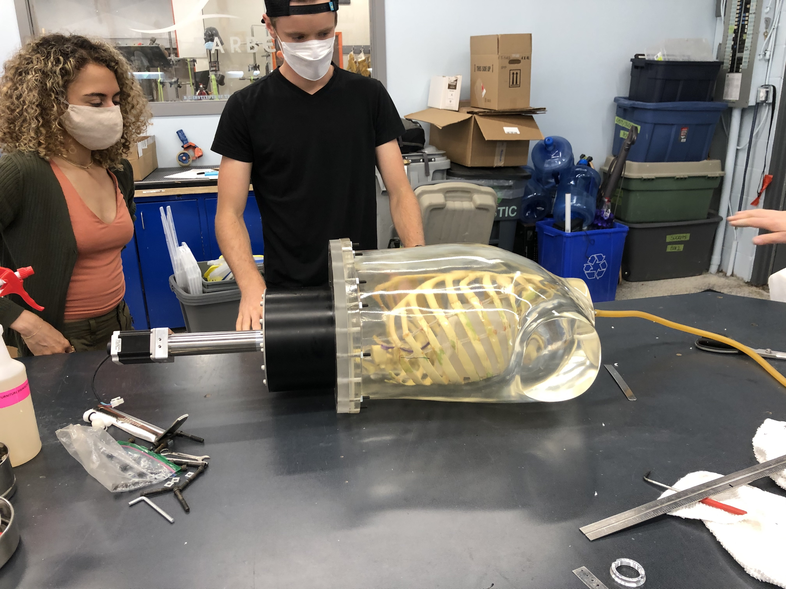
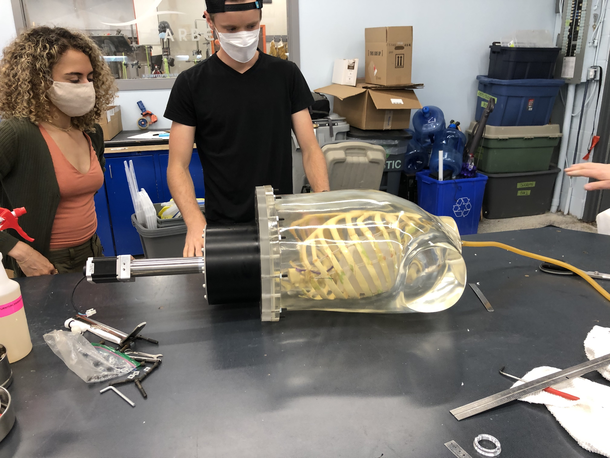
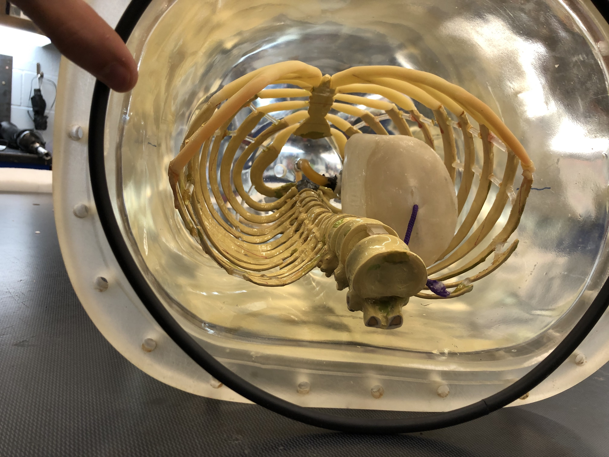
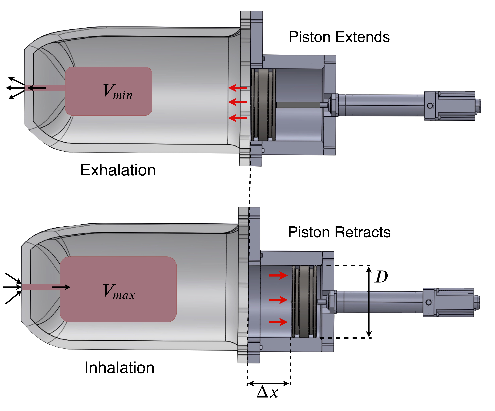
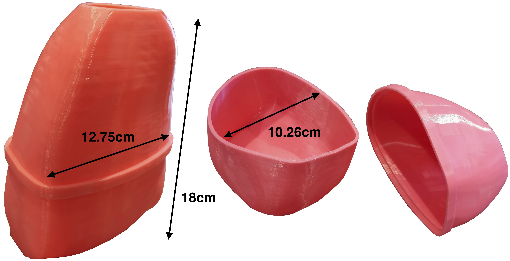
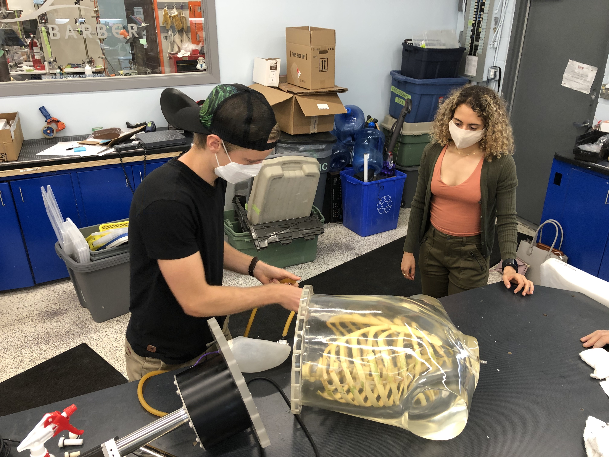

Robotic, Anthorpomorphic PET Phantom
For my first capstone project (engineering physics' analogue to a thesis project in an honors physics degree, except we do two), I worked in a team of three with the BC Cancer Research Centre. We designed and built a robotically actuated, anatomically accurate, anthropomorphic phantom for use in studies on the effect of respiratory motion on PET image quantification and reconstruction. This involved mechatronic design, fluid dynamics, and PET physics, as well as project management skills in an interdisciplinary team of engineers, biologists, and physicists. To fabricate the parts, we used 3D-printing, waterjet cutting, milling, and silicone rolling techniques. Additionally, we produced engineering drawings for a machine shop to manufacture the piston and cylinder.
Open Source:
We decided to open source the project, so all the details, including a paper about the design, can be found here.
Vidoes and Photos:
See demo video here
Some videos of the breathing phantom can be found here.
Conference Abstract
We presented this project at the American Association of Physicists in Medicine / Canadian Organization for Medical Physics Joint Conference. See poster here.
Paper
We also wrote a paper which has been published in Medical Physics here (See PDF). A preprint was published on techRxiv.
Awards
We were awarded a Blue Ribbon at the AAPM/COMP conference for high reviewer scores. Additionally, we received the University of British Columbia Engineering Design and Innovation Day Faculty Prize for Engineering Physics. Our work featured on UBC website: Creation of Breathing Anthropomorphic Phantom receives multiple honours
The Assembled Phantom
 

Testing the Phantom

Phantom Torso with Ribcage

Phantom with Diaphragm Membrane, Linear Actuator, and Lungs

One of the first things we did was prototype (using a waterjet cutter) and test the diaphragm membrane. The CAD models for the base plate onto which the diaphragm attaches were derived from a CT scan of the phantom torso to get as accurate dimensions as possible.
Diaphragm Prototype

As described in the paper also linked above, the diaphragm mechanism was found to be unsatisfactory, so I designed a piston mechanism. The final design is seen below. Efforts to fabricate the lungs were temporarily hampered by COVID-19, but after initial testing with balloons, the phantom works very well and breathes in a highly controllable, repeatable manner. It can achieve breathing rates up to about 25 breaths per minute at 1232ml tidal volume, and much faster at lower volumes. Any arbitrary waveform can be fed to the actuator within these limits, creating a highly flexible, realistic, and useful phantom. The lungs are now nearing completion, with 2 versions finished, and (hopefully) the final version in fabrication.
Early Lung Prototype in Place in Ribcage

Breathing Mechanism on Phantom
(with no ribcage, lungs, liver, etc. in place yet as they were temporarily inaccessible due to COVID-19)

CAD Cross-Section of Phantom

Breathing Concept

Respiration is achieved through incompressible-fluid (i.e. water) - mediated pressure modulation. As the piston extends, the phantom's volume effectively decreases, and the only way for this to occur is for air to flow out of the lungs. The opposite happens during inhalation.
3D-Printed Lung Positive

The mold is printed in 2 parts due to size constraints, with no internal seam between the parts. Heat-resistant dental plaster is poured into the 3D-printed positive, and finally the high temperature vulcanization (HTV) liquid silicone rubber (LSR) is rolled onto the plaster mold and baked in an oven to set.
Piston and Cylinder

The piston and cylinder were very carefully designed with help from the Parker O-ring Handbook to fulfill certain O-ring specifications that lead to an effective seal. These requirements were designed to be met both in the ideal situation, and in the worst case scenario of our specified manufacturer tolerances, and water and heat-induced swelling of the plastic. Material choice played an important roll in ensuring these specs could be achieved while avoiding backscattering gamma photons off metal, and minimizing piston friction.
Me Working on the Phantom
